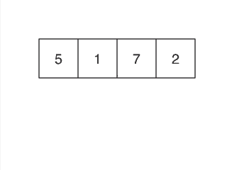

What are sorting algorithms?
A sorting algorithm does exactly what the name implies; it sorts a series of objects using
There are many different types of sorting algorithms, but some of the most popular are the
The Insertion sorting algorithm
The insertion sorting method works pretty much the same way that we would sort playing cards in our hand. The array of objects are sorted into 2 parts: the sorted part and the unsorted part. The algorithm iterates through the values from the unsorted part and places at their correct positions in the sorted part.Pseudocode:
for i = 1 to n
key ← A [i]
j ← i – 1
while j > = 0 and A[j] > key
A[j+1] ← A[j]
j ← j – 1
End while
A[j+1] ← key
Below is a visualization of how the insertion algorithm works.

The Selection sorting algorithm
The selection sorting algorithm is very similar to the insertion sorting algorithm, but there's one difference: in the insertion sort, the algorithm loops over the sorted elements and finds the right position in that array to place it. But in the selection sort, the algorithm loops over the unsorted elements and puts them at the end of the sorted elements.Pseudocode:
for i = 1 to n - 1
/* set current element as minimum*/
min = i
/* check the element to be minimum */
for j = i+1 to n
if list[j] < list[min] then
min = j;
end if
end for
/* swap the minimum element with the current element*/
if indexMin != i then
swap list[min] and list[i]
end if
end for
Below is a visualization of how the selection algorithm works.